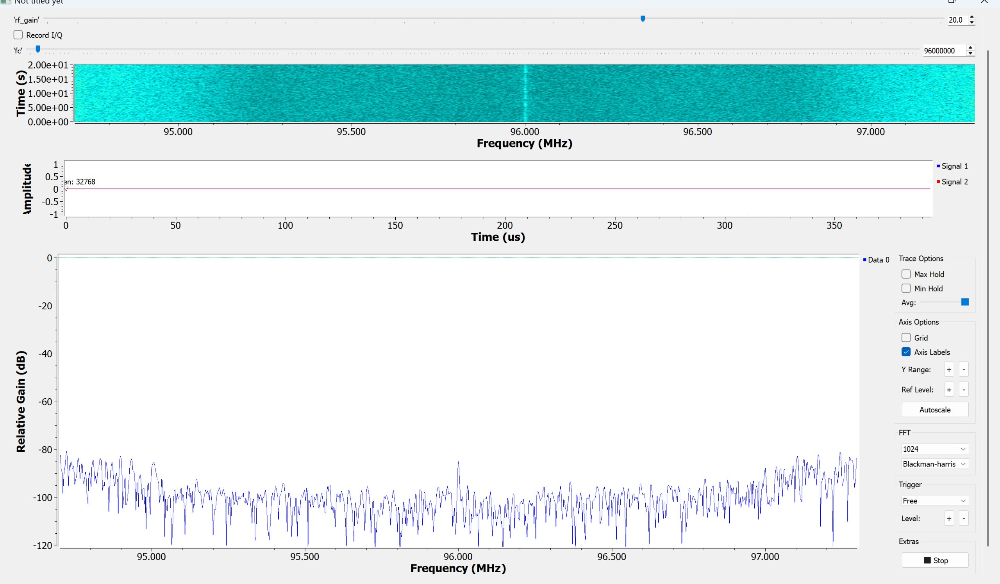
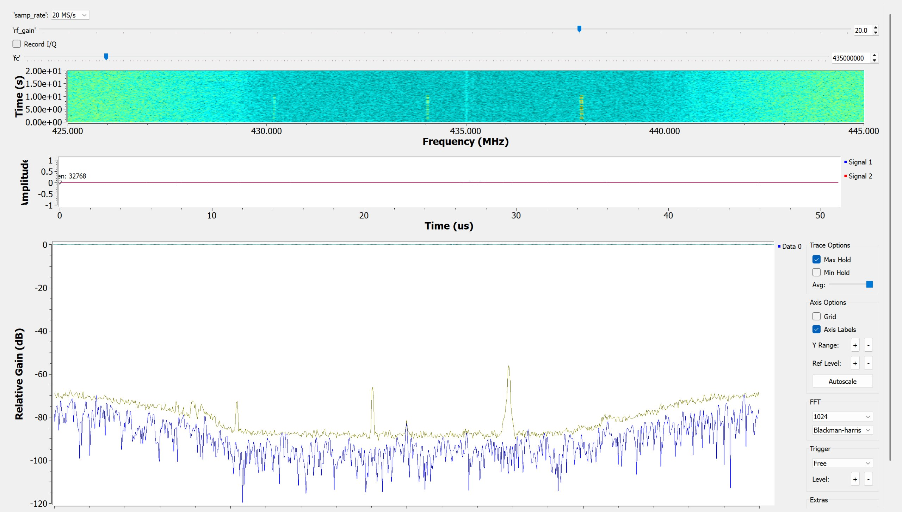
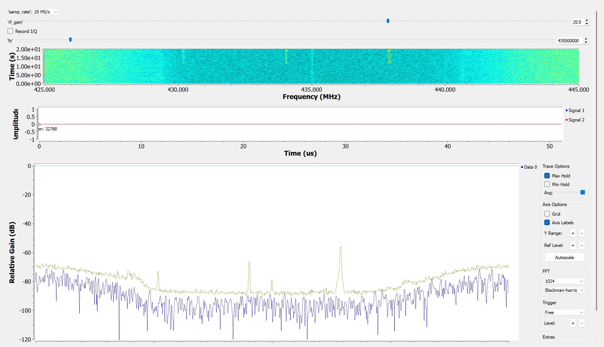
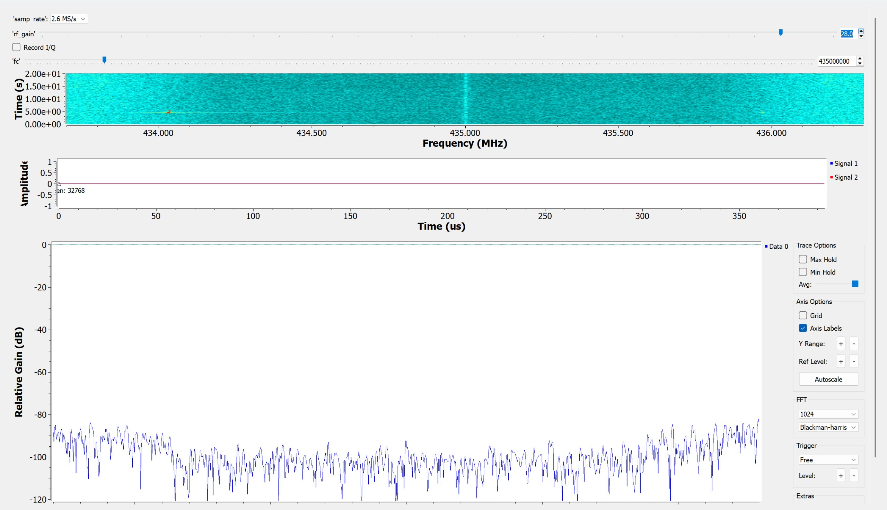
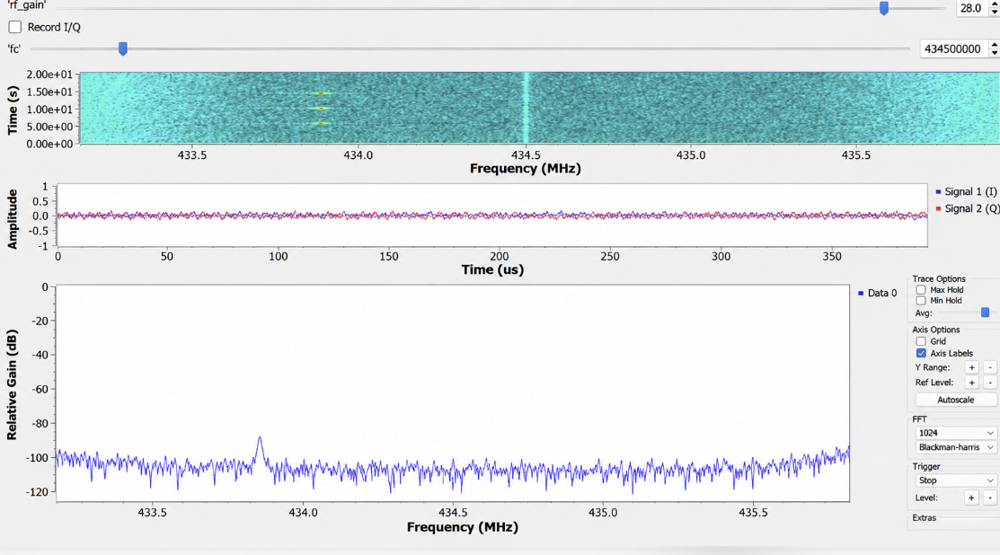
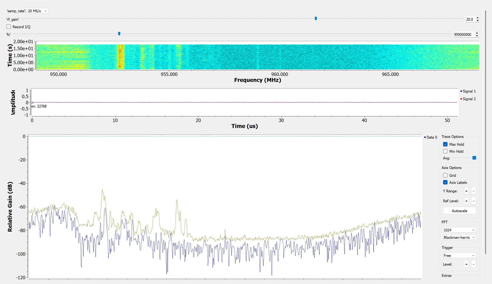

هدف و روش آزمایش
در بخش سوم، باندهای تعیینشده در دستورکار را با گیرندهٔ رادیو نرمافزار پایش کردیم؛ طیف لحظهای و آبشار را با بیشینهٔ نگهداشتهشده، Max Hold، مقایسه کردیم و سیگنالهای باریک، پهن و گذرا را از روی امضای طیفی و زمانی بررسی کردیم. پویش باندها، ثبت ضبطهای خام و مقایسهٔ مشخصات طیفی، محور این بخش از آزمایش بود.
مراحل عملی بخش سوم را در آزمایشگاه انجام دادیم و نتایج را به دستیار آموزشی ارائه کردیم؛ اجرای مراحل به تأیید ایشان رسید. گزارش، مشاهدات دستگاه و نتایج تحلیل عددی را در بخشهای مربوط ارائه میکند.
| شرح | نوع مدرک |
|---|---|
تصاویر 1pictureee.jpg تا 10pictureee.jpg از محیط پایش و ثبت طیف |
نماهای اصلی جلسه |
| نمای بازسازیشدهٔ تنظیم باریک در مرکز 434.5 MHz | تصویر تکمیلی تنظیم |
| نام، تنظیمات، زمان و حجم نمایشی ضبطهای معرفیشده | اطلاعات ضبط |
| محاسبات نرخ، گام، حجم، فرکانس شبکه و احتمال رهگیری | محاسبات تحلیلی |
| لبههای ثبتشده در بازاندازهگیری با دستگاه و محاسبهٔ مرکز و پهنا در بخش ۱۳ | بازاندازهگیری و محاسبهٔ پهنا |
سختافزار و اتصال
دستگاه مورد استفاده PUZHI PZSDR P201PRO
با تراشهٔ گزارششدهٔ ad9361، رشتهٔ سفتافزار 3669-dirty و نشانی ip:192.168.1.10 بود. دادهها از LAN منتقل شدند و کابل USB تغذیه را تأمین کرد. آنتن به ورودی RX1 متصل بود و دستگاه در حالت دریافت به کار رفت.
کمیتها و واحدها
مقادیر همراه «حدود» برآورد بصری از نماهای عمومیاند. سطح نمایشگر بر حسب توان نسبی است؛ واحد dBm تنها برای توان کالیبرهشده کاربرد دارد. در محاسبات، مرکز تنظیم گیرنده و مرکز سیگنال است.
تنظیمات و پوشش گامهای پویش؛ بندهای ۱ تا ۳
فلوگراف lab01_monitor.grc با آنتن روی RX1 به کار رفت. تنظیم مبنای پویش، نرخ 20 MS/s، طول FFT = 1024، پنجرهٔ Blackman–Harris، میانگینگیری None، Max Hold روشن و lo_shift = 0 است. بهرهٔ نماهای اصلی 20 dB است؛ نمای باریک اصلی ریموت در شکل ۵ بهرهٔ 28 dB دارد.
| بازهٔ میانی؛ MHz | مرکز؛ MHz | باند هدف |
|---|---|---|
| 88–104; 104–120 | 96; 112 | الف؛ FM، بازهٔ 88–108 MHz، اختیاری |
| 427–443 | 435 | ب؛ ریموت، بازهٔ 430–440 MHz |
| 935–951; 951–967 | 943; 959 | ج؛ فروسو، بازهٔ 935–960 MHz |
| 890–906; 906–922 | 898; 914 | ج ـ ۲؛ فراسو، بازهٔ 890–915 MHz |
نمای کامل با نرخ 20 MS/s از تا است؛ در نتیجه، دو نمای متوالی 4 MHz همپوشانی دارند. بخشهای میانی 16 MHz در مرز به هم میرسند. در تحلیل هر باند، قسمت خارج از بازهٔ هدف کنار گذاشته میشود؛ برای مثال، انتهای باند فروسو 960 MHz است، نه انتهای نمای دوم.
روش ثبت در هر گام
طبق روش جلسه، مرکز را به هرتز و با تمام رقمها وارد کردیم؛ گام شمارنده 16 MHz بود. در هر گام 15–20 s برای مشاهده مکث و رفتار Max Hold بررسی شد. با تغییر فرکانس، منحنی نگهداشتهشده پاک شد و هر گام مستقل از گام قبلی بررسی شد. برای سیگنال دستکم 10 dB بالاتر از کف محلی، فرکانس، پهنای تقریبی، سطح، رفتار زمانی، حدس سرویس و ارجاع ضبط در لاگبوک آمده است.
تفکیک پویش و اندازهگیری پهنا. برای پویش سریع از FFT = 1024 استفاده شد. در تحلیل دقیق حامل باریک، نرخ و طول FFT با معیار انتخاب میشوند تا لبههای پهنای x-dB قابل تفکیک باشند.
باند الف: جستوجوی اختیاری FM؛ بند ۴
دو مرکز 96 MHz و 112 MHz بررسی شدند. تصاویر ثبتشده نماهای باریکاند: عرض محور تقریباً 2.6 MHz است؛ پوشش این قابها باریکتر از گسترهٔ پویش 20 MS/s است.


نتیجهٔ بررسی باند. در این دو تصویر، تعداد ایستگاههای واضح و قابل شمارش صفر است؛ این عبارت به تمام باند 88–108 MHz تعمیم داده نمیشود. مرکز دوم، با نرخ 20 MS/s بخش 104–108 MHz را پوشش میدهد، اما با نمای باریک ثبتشده چنین پوششی ندارد. بهرهٔ آنتن GSM/LTE در باند FM و گسترهٔ محدود این نماها بر نتیجهٔ دریافت اثر میگذارند.
باند ب: نمای گستردهٔ ریموت؛ بند ۵
ابتدا باند ب را با مرکز 435 MHz، نرخ 20 MS/s و بهرهٔ 20 dB مشاهده کردیم. هدف آزمون، مشاهدهٔ برستهای ریموت نزدیک 433.92 MHz بود.


در حوالی 434 MHz یک ویژگی باریک در Max Hold و رگههای کوتاه زمانی دیده میشود. ویژگی گذرای دیگری نزدیک 437.9 MHz دیده میشود که انتساب آن به ریموت آزمون، از روی این نما مشخص نیست. با توجه به خانهٔ 19.53 kHz در این نما، تحلیل پهنای چند ده کیلوهرتزی ریموت و رفتار زمانی آن بر نمای باریک و ضبط کمنرخ متمرکز میشود.
باند ب: نمای باریک و تنظیم 434.5 MHz
در نمای باریک اصلی، نرخ 2.6 MS/s و بهرهٔ 28 dB ثبت شده است. مرکز 434.5 MHz، مطابق دستورکار، ریموت را از مرکز گیرنده و لبههای نمایش دور نگه میدارد.


برای نرخ 2.6 MS/s، گسترهٔ اسمی با مرکز پیشنهادی 433.2–435.8 MHz و بخش میانی حدود 433.46–435.54 MHz است. فرکانس 433.92 MHz در این بخش میانی قرار میگیرد. در مرکز 435 MHz، حد پایین بخش میانی 433.96 MHz میشود؛ بنابراین مرکز پیشنهادی دستورکار برای این ریموت انتخاب بهتری است.
باند ج: فروسو، گام اول در 943 MHz؛ بند ۶
گام اول فروسو با نرخ 20 MS/s، بهرهٔ 20 dB، طول FFT = 1024 و Max Hold روشن اجرا شد.

| سطح تقریبی | عرض تقریبی | ناحیه؛ MHz | ویژگی |
|---|---|---|---|
| -50 to -55 dB | 4–5 MHz | 942–946.5 | بلوک پهن اول |
| -55 to -60 dB | 4–5 MHz | 947–951.5 | بلوک پهن دوم |
برای دیدن ستونهای دیگر، جدول را افقی پیمایش کنید.
سطح هر دو بلوک نسبت به نواحی کماشغال اطراف بیش از معیار 10 dB بالاتر است. پیوستگی نسبی در آبشار و شکل بلوکی، وجود سیگنال پهن را تأیید میکند. حدس فناوری در این مرحله UMTS/LTE است: طبق دستورکار، UMTS کانال نامی 5 MHz با اشغال حدود 3.8–4.7 MHz دارد و LTE نیز میتواند کانال 5 MHz با اشغال حدود 90% داشته باشد. بنابراین عرض حدود 4–5 MHz بهتنهایی بین این دو فناوری تمایز قطعی ایجاد نمیکند.
کنترل محدودهٔ معتبر. بخش میانی این نما 935–951 MHz است؛ انتهای بلوک دوم در نزدیکی مرز این بخش قرار میگیرد. لبهٔ بالایی آن با مقایسهٔ نمای مجاور و پاسخ فیلتر گیرنده تفسیر میشود تا افت گیرنده از لبهٔ سیگنال تفکیک شود.
باند ج: فروسو، گام دوم در 959 MHz
با افزایش مرکز به 959 MHz، بخش میانی 951–967 MHz پوشش داده شد؛ برای باند هدف، قسمت 951–960 MHz اهمیت دارد.


حاملهای باریک حدود 952–956 MHz نامزدهای GSM هستند. ردهای پایدار آبشار با حامل کنترلی BCCH سازگارند؛ تشخیص این مرحله بر امضای طیفی و زمانی متکی است. نشانگر قرمز 961.304 MHz, -8.85 dB در شکل ۸ موقعیت نشانگر را مشخص میکند و روی قلهٔ حامل قرار ندارد.
باند ج ـ ۲: فراسو، گام اول در 898 MHz؛ بند ۷
برای مشاهدهٔ ارسال تلفن، گام اول فراسو در مرکز 898 MHz بررسی شد. نرخ 20 MS/s و بهرهٔ نهایی 20 dB از نام ضبط متناظر نیز مشخص است. آزمون تلفن با رعایت فاصله و افزایش تدریجی بهره انجام و نتیجه به TA ارائه شد.

مشاهده و تفسیر نشانگر
یک رخداد باریک و قوی حوالی 896 MHz دیده میشود؛ نوک منحنی نگهداشتهشده حدود -40 dB است. نشانگر 896.037 MHz, -58.77 dB روی شیب همان ویژگی قرار دارد و قرائت نوک آن نیست. نزدیکی طیف آبی به کف همراه با قلهٔ برجستهٔ نگهداشتهشده، رفتار گذرا را نشان میدهد. این رفتار با ارسال گذرای تلفن در باند فراسو سازگار است؛ تعیین پهنا و مرکز x-dB به قرائت دو لبه متکی است.
روش اجرای آزمون تلفن
مطابق دستورکار، بهره را از 0 dB آغاز کردیم، تلفن را دستکم 5 m دور از آنتن قرار دادیم و پس از انتخاب حالت نسل دو، بهره را در صورت نیاز بهتدریج افزایش دادیم.
باند ج ـ ۲: فراسو، گام دوم در 914 MHz
گام دوم فراسو در مرکز 914 MHz، نرخ 20 MS/s و بهرهٔ 20 dB مشاهده شد. بخش معتبر این گام 906–922 MHz است؛ در باند هدف، فقط قسمت 906–915 MHz بررسی میشود.

مقایسه با گام اول
در این قاب چند ویژگی ضعیف و باریک دیده میشود، اما رخداد قوی مشابه شکل ۱۰ وجود ندارد. تفاوت دو گام با اشغال زمانی متغیر فراسو سازگار است. در تفسیر نما، قلهٔ مرکز گیرنده و مصنوع DC از ویژگیهای ناشی از سیگنال RF تفکیک میشوند.
کنترل تنظیمات دریافت
چهار کنترل دستورکار عبارتاند از: پهنای باند واقعی RF، نرخ نمونهبرداری متناسب با پهنای سیگنال، قرار داشتن فرکانس در بازهٔ دستگاه و اتصال آنتن به RX1. این کنترلها پیش از افزایش بهره انجام میشوند. در آزمون تلفن، تفاوت باند مورد استفادهٔ شبکه، از جمله GSM900 یا GSM1800، بر محل جستوجوی ارسال فراسو اثر دارد؛ بررسی حاضر به نماهای همین باند محدود است.
لاگبوک تجمیعی پویش
لاگبوک زیر مشاهدات طیفی و مشخصات ضبط را تجمیع میکند. زمانهای درجشده، زمان موجود در پسوند نام فایلاند. نسخهٔ متنی لاگبوک در data/scan-log.md قرار دارد.
| مدرک | مرکز؛ MHz | مشاهده، رفتار و حدس سرویس | باند |
|---|---|---|---|
| 1; 2 | 96; 112 | در دو قاب باریک، ایستگاه واضح FM تفکیک نشده؛ نتیجه فقط مربوط به همین قابهاست | الف |
| 9; 10 | 435 | رخدادهای گذرا نزدیک 434 MHz؛ ویژگی جانبی نزدیک 437.9 MHz با سرویس نامشخص | ب |
| 3 | 435 | نمای 2.6 MS/s، بهرهٔ 28 dB؛ یک رخداد کوتاه در آبشار؛ Max Hold خاموش | ب |
| 4 | 943 | دو بلوک پهن حدود 4–5 MHz؛ نسبتاً پیوسته؛ UMTS/LTE محتمل | ج |
| 5; 8 | 959 | حاملهای باریک حدود 952–956 MHz و ردهای نسبتاً پایدار؛ GSM محتمل | ج |
| 7 | 898 | رخداد قوی حوالی 896 MHz؛ باقیماندن در Max Hold و افت در قاب لحظهای؛ فراسوی گذرا | ج ـ ۲ |
| 6 | 914 | فعالیت باریک ضعیفتر؛ تعیین حامل و پهنای دقیق به قرائت متمرکز نیاز دارد | ج ـ ۲ |
برای دیدن ستونهای دیگر، جدول را افقی پیمایش کنید.
| حجم نمایشی | زمان نام فایل | مرکز؛ MHz | نرخ؛ MS/s | شناسه |
|---|---|---|---|---|
| 76.2 MB | 10:59:05 | 435 | 20 | R01 |
| 66.7 MB | 10:56:20 | 898 | 20 | R02 |
| 76.2 MB | پسوند ناقص | 959 | 20 | R03 |
برای دیدن ستونهای دیگر، جدول را افقی پیمایش کنید.
مرز تشخیص و شناسایی سرویس
آستانهٔ تشخیص برابر اختلاف 10 dB با کف محلی است. برای حدس فناوری، باند فرکانسی، پهنا، شکل لبه و رفتار زمانی بهطور همزمان بررسی شدند؛ پاسخ گیرنده نیز در تفسیر لبههای نما لحاظ شد.
فهرست حداقل پنج سیگنال و جدول ۷
سه حامل باریک فروسو، ریموت، دو بلوک پهن و یک رخداد فراسو برای تحلیل انتخاب شدند. جدول زیر مشخصات آنها را در مرحلهٔ پویش ثبت میکند؛ روش اندازهگیری x-dB در بخش بعد آمده است.
| ردیف | مرکز؛ MHz | پهنا؛ kHz | قلهٔ نسبی | رفتار و سرویس | ضبط | ||
|---|---|---|---|---|---|---|---|
| S1 | 952.800* | 200 نامی | – | 20 | دامنهٔ گروه** | رد باریک؛ GSM محتمل | R03 |
| S2 | 954.200* | 200 نامی | – | 20 | دامنهٔ گروه** | رد باریک؛ GSM محتمل | R03 |
| S3 | 955.400* | 200 نامی | – | 20 | دامنهٔ گروه** | رد باریک؛ GSM محتمل | R03 |
| S4 | 433.920* | چند ده، نامی | – | 20 | حدود -65– -70 | گذرا؛ ریموتِ آزمون | R01 |
| S5 | حدود 4000–5000 | – | 20 | حدود -50– -55 | پهن و پیوسته؛ UMTS/LTE | P04 | |
| S6 | حدود 4000–5000 | – | 20 | حدود -55– -60 | پهن و پیوسته؛ UMTS/LTE | P04 | |
| S7 | چند صد، تقریبی | – | 20 | حدود -40 | گذرا؛ فراسوی تلفن | R02 |
برای دیدن ستونهای دیگر، جدول را افقی پیمایش کنید.
راهنمای جدول. نرخ بر حسب MS/s و سطح بر حسب dB نسبی است. علامت * مرکز کانال مرجع یا فرکانس هدف آزمون را مشخص میکند؛ مرکز x-dB از میانگین دو لبه محاسبه میشود. ** دامنهٔ قلههای گروه در شکلهای ۸ و ۹ حدود -45 تا -60 dB است؛ ستون در مرحلهٔ پویش مقدارگذاری نمیشود. P04 به الگوی نامگذاری معرفیشده در نمایه ارجاع دارد.
شبکهٔ کانال و دو حامل پیوسته
برای مراکز مرجع GSM900 داریم شمارههای کانال از مراکز شبکه محاسبه شدند؛ تطبیق قله با شبکه با لحاظ عدم قطعیت قرائت انجام میشود. دو رد نسبتاً پایدار منتخب در فروسو را میتوان با مراکز مرجع 952.8 و 955.4 MHz بررسی کرد؛ پایداری در آبشار، انتساب احتمالی به BCCH را تقویت میکند.
روش اندازهگیری دقیق پهنا؛ بندهای ۸ تا ۱۰
پس از انتخاب سیگنال، کمترین نرخ موجودی انتخاب میشود که باشد. سیگنال از مرکز و لبههای نما دور نگه داشته میشود؛ برای بلوک پهن، مهم آن است که لبههای خود بلوک از این نواحی دور باشند. طول FFT باید شرط زیر را برآورده کند:
| فاصلهٔ خانه | طول انتخابی | نرخ | سیگنال نمونه |
|---|---|---|---|
| 317.3828 Hz | 8192 | 2.6 MS/s | حامل حدود 200 kHz |
| 2441.4063 Hz | 8192 | 20 MS/s | تحلیل همان حامل از ضبط گسترده |
| 317.3828 Hz | 8192 | 2.6 MS/s | ریموت نمونه با پهنای 40 kHz |
| 9765.625 Hz | 1024 | 10 MS/s | بلوک نمونه با پهنای 4.5 MHz |
برای دیدن ستونهای دیگر، جدول را افقی پیمایش کنید.
برای مثال، در پهنای 200 kHz، حد مجاز خانه 10 kHz است؛ نمای پویش 20 MS/s, N=1024 این شرط را ندارد، اما آن را برآورده میکند. برای بلوک 4.5 MHz، نرخ 5 MS/s از کمتر است؛ از گزینههای موجود، 10 MS/s مناسب است.
پس از دستکم 20 s نگهداشتن بیشینه، اگر قله حداقل 26 dB بالاتر از کف باشد، انتخاب میشود؛ در غیر این صورت . دو لبه در سطح خوانده میشوند: مقایسهٔ درست. پهنای کانال نامی، پهنای 6 dB، پهنای 20 dB و پهنای اشغالی 99% تعریفهای متفاوتی دارند. برای مقایسهٔ کمّی، تعریف پهنا، مقدار و روش استخراج یکسان در نظر گرفته میشوند.
محاسبهٔ مرکز و پهنای باند
مقادیر دو لبهٔ فرکانسی در بازاندازهگیری با دستگاه ثبت شدند و در جدول زیر آمدهاند. مرکز و پهنای باند را با استفاده از همین مقادیر و روابط بخش قبل محاسبه میکنیم.
| پهنا؛ kHz | (MHz) | (MHz) | (MHz) | ردیف |
|---|---|---|---|---|
| 220 | 952.800 | 952.910 | 952.690 | E1 |
| 220 | 954.200 | 954.310 | 954.090 | E2 |
| 140 | 955.400 | 955.470 | 955.330 | E3 |
برای دیدن ستونهای دیگر، جدول را افقی پیمایش کنید.
محاسبهٔ ردیف اول
محاسبهٔ ردیف دوم
محاسبهٔ ردیف سوم
مقایسهٔ پهنای 140 kHz با دو مقدار 220 kHz مستلزم یکسانبودن سطح افت است. برای تعیین و سطح قله، قرائت کف محلی و سطح مرجع لبهها نیز لازم است.
ثبت و نامگذاری فایلهای ضبط
نام فایلها، مشخصات دریافت را برای تطبیق با نتایج طیفی در بر میگیرند. پیشوند مشترک فایلهای تیم به صورت زیر است:
Romina Babaei 402111259- Mohammad Mousavi 402111272نمایهٔ کامل نامها در data/recording-index.md ثبت شده است.
| شناسه | بخش پارامترهای نام | زمان نام فایل | کاربرد و حجم |
|---|---|---|---|
| R01 |
|
20261104T105905 |
باند ریموت گسترده؛ 76.2 MB |
| R02 |
|
20261104T105620 |
فراسو، گام اول؛ 66.7 MB |
| R03 |
|
202611... |
فروسو، گام دوم؛ 76.2 MB |
برای دیدن ستونهای دیگر، جدول را افقی پیمایش کنید.
الگوی نامگذاری سایر برداشتها
برداشتهای بخش سوم انجام شدند. برای یکسانسازی نمایه، جدول بعد الگوی پیشنهادی نامگذاری سایر برداشتها را مشخص میکند. در این الگو، TIMESTAMP زمان واقعی ضبط است و نام اصلی فایل نیز در فراداده حفظ میشود.
| شناسه | بخش پارامترهای الگو | کاربرد |
|---|---|---|
| P04 |
|
گام اول فروسو و دو بلوک پهن |
| P05 |
|
گام دوم فراسو |
| P06 |
|
ریموت باریک؛ بهره مطابق فرادادهٔ برداشت |
یک فایل گستردهٔ 959 MHz میتواند دادهٔ چند حامل را همزمان داشته باشد؛ تعداد سیگنالها الزاماً برابر تعداد فایلها نیست. برای ردیفهای S1–S3 همان ضبط R03 مرجع مشترک است. دو مدخل نمایشی 959 MHz با زمان کامل یا شناسهٔ فایل از هم تفکیک میشوند؛ صرف تکرار مرکز فرکانس، شمار برداشتها را تعیین نمیکند.
محاسبهٔ حجم و مدت ضبط
در قالب cf32، مؤلفههای I و Q هر یک چهار بایتاند. با استفاده از روابط زیر، حجم، تعداد نمونه و مدت نمونهای ضبط را محاسبه میکنیم: نرخ نوشتن در 20 MS/s برابر 160 MB/s دهدهی و در 2.6 MS/s برابر 20.8 MB/s است.
| اگر واحد MiB باشد | اگر واحد MB باشد | حجم نمایشی | ضبط |
|---|---|---|---|
| 0.499384 s | 0.476250 s | 76.2 MB | R01 و R03؛ نرخ 20 MS/s |
| 0.437125 s | 0.416875 s | 66.7 MB | R02؛ نرخ 20 MS/s |
برای دیدن ستونهای دیگر، جدول را افقی پیمایش کنید.
مقادیر جدول از حجمهای نمایشی گردشده به دست آمدهاند. به دلیل تفاوت قرارداد MB در نمایش فایل، هر دو تبدیل واحد درج شده است؛ محاسبهٔ نهایی با تعداد دقیق بایت انجام میشود.
ضبط باریک ریموت
برای 3.8 s در نرخ 2.6 MS/s، حجم نظری چنین است: با محدودیت 80 میلیون بایتیِ بلوک ضبط، سقف مدت در این نرخ حدود 3.84615 s و در نرخ 20 MS/s حدود 0.5 s است. نزدیکی 76.2 MiB به سقف 80 MB با توقف بر اساس محدودیت حجم سازگار است؛ پیام ضبط و تعداد بایت، نوع توقف را مشخص میکنند.
پیوستگی دریافت و تحلیل زمانی
طبق دستورکار، دریافت شبکه در نرخ 20 MS/s ممکن است با افت نمونه همراه باشد؛ این برداشتها برای تحلیل طیف به کار میروند. تحلیل طول و تکرار برست بر ضبط 2.6 MS/s، پس از کنترل پیوستگی، متکی است. زمان رخدادها از شاخص نمونه و نرخ ثبت استخراج میشود.
پاسخ پرسش ۶: سیگنال پیوسته، گذرا و نقش Max Hold
پرسش. کدام باند بیشتر سیگنال پیوسته داشت و کدام بیشتر گذرا؟ Max Hold چه چیزی نشان داد که منحنی لحظهای نشان نمیداد؟
مقایسهٔ باندها بر اساس تصاویر
فروسوی باند ج بیشترین نشانههای پیوستگی را دارد: دو بلوک پهن در شکل ۷ و برخی ردهای باریک در شکلهای ۸ و ۹ در چند ردیف زمانی آبشار باقی میمانند. این رفتار با ارسال پیوستهٔ ایستگاه پایه و حامل کنترلی سازگار است.
باند ریموت و فراسوی تلفن گذراترند. در شکلهای ۳ و ۴، رخدادها به بخشهایی از آبشار محدودند؛ در شکل ۱۰ نیز منحنی نگهداشتهشده قلهٔ برجستهای دارد که طیف لحظهای دیگر همان ارتفاع را نشان نمیدهد. در نماهای ثبتشدهٔ FM، ایستگاه واضحی برای مقایسهٔ پیوستگی تفکیک نشد.
تفاوت دو منحنی
اگر توان قاب در خانهٔ برابر باشد، طیف لحظهای فقط قاب جاری را نشان میدهد، ولی بیشینهٔ نگهداشتهشده برابر است با پس پس از پایان یک برست، قلهٔ آن در Max Hold باقی میماند؛ همین موضوع در آزمون تلفن و ریموت دیده میشود. Max Hold حضور قبلی انرژی در یک فرکانس را نگه میدارد، نه زمان دقیق وقوع، تعداد ارسالها یا ضریب اشغال زمانی را.
چرا میانگینگیری روی None قرار میگیرد؟
اگر ابتدا قابها میانگینگیری شوند، توان یک برست کوتاه با قابهای کمانرژی مخلوط و قلهٔ آن تضعیف میشود؛ در نتیجه، بیشینهٔ همان منحنی میانگینگرفته نیز لزوماً قلهٔ واقعی برست را حفظ نمیکند. برای مقایسهٔ سطح رخدادهای گذرا، طبق دستورکار میانگینگیری خاموش و Max Hold روشن است.
نتیجهٔ پرسش ۶. فروسو در تصاویر پیوستهتر و ریموت و فراسو گذراتر بودند. Max Hold قلهٔ رخدادهای گذشته را آشکار نگه داشت، در حالی که طیف لحظهای پس از رخداد به کف نزدیک شد. این اختلاف، نشانهٔ رفتار گذرای سیگنال است.
پاسخ پرسش ۷: شمارش برستها و احتمال رهگیری
پرسش. برستهای ریموت چند بار در نمایش زنده دیده شدند و چند بار انتظار مشاهده داشتیم؟ نتیجه با مدل احتمال رهگیری پیشگزارش چگونه مقایسه میشود؟
مشاهده و معیار مقایسه
عکسهای ۳ و ۴ وجود رخدادهای گذرا را نشان میدهند؛ تعداد رگههای آبشار با تعداد فشار دکمه برابر نیست، زیرا یک فشار میتواند چند بسته داشته باشد و نمایشگر نیز همهٔ نمونهها را نشان نمیدهد. برای مقایسهٔ عددی، شمار واقعی ارسالهای آزمون و شمار مشاهدههای زنده در همان بازه تعریف میشوند: تصاویر، وقوع برست را تأیید میکنند؛ شمارش کامل ارسال و مشاهده از این قابهای ثابت تعیین نمیشود. مقایسهٔ عددی زیر، ارزیابی مدل احتمال رهگیری است.
مدل رهگیری یک برست
در مدل نمایش زنده، در هر فاصلهٔ بهروزرسانی یک قاب FFT به طول بررسی میشود. برای برست با طول و شروع یکنواخت نسبت به قاب، با صرفنظر از افت شبکه و آستانهٔ توان، احتمال هر مقدار همپوشانی از رابطهٔ زیر به دست میآید: اگر یک قاب کامل داخل برست لازم باشد، تقریب سختگیرانهتر چنین است: رابطهٔ دوم شرط یک قاب کامل درون برست را اعمال میکند؛ همپوشانی کوتاهتر ممکن است از آستانهٔ آشکارسازی عبور نکند.
ارزیابی عددی مدل
با قرار دادن زمان بهروزرسانی و طول برست در مدل و انتخاب N=1024، احتمال هر همپوشانی در نرخ 20 MS/s برابر 1.0512% و در 2.6 MS/s حدود 1.39385% محاسبه میشود. این دو احتمال از مدل رهگیری و با استفاده از پارامترهای آزمون محاسبه شدهاند.
مقایسه با مدل پیشگزارش. کمبودن پوشش زمانی نمایشگر، میتواند دیدن برستها را از تعداد ارسالها کمتر کند؛ آستانهٔ آشکارسازی، طول برست، افت شبکه و همزمانی تکرارها نیز اثر دارند. Max Hold فقط رخدادهایی را نگه میدارد که دستکم یک بار پردازش شدهاند؛ رخداد از دسترفته را بازسازی نمیکند. برای ارسالهای با فاز مستقل، احتمال دیدن حداقل یک مورد از تکرار، است؛ در تکرارهای همفاز، شرط استقلال برقرار نیست. بنابراین تکرار آزمون و افزایش زمان مشاهده، در صورت تغییر فاز رخدادها، احتمال آشکارسازی را افزایش میدهد.
تحلیل پس از جلسه و کد قابل تکرار
برای استخراج طیف، پهنای اشغالی و رفتار زمانی از ضبط خام، برنامهٔ زیر تهیه شد:
برنامه فایل cf32 را میخواند و طیف، لبههای کانال و آبشار را محاسبه میکند. محاسبهٔ مرکز و پهنا از لبههای ثبتشده در بازاندازهگیری با دستگاه، در بخش ۱۳ ارائه شده است.
چگالی طیف توان و پهنای اشغالی
قابهای همپوشان در پنجره ضرب میشوند و توان طیفی آنها در مقیاس خطی میانگین گرفته میشود. برای سیگنال برستی، انتخاب قابهای فعال باید پیش از محاسبهٔ طیف سیگنال انجام شود. بعد از تخمین کف و محدودکردن تحلیل به کانال انتخابشده، توان غیرمنفی سیگنال و تجمع آن محاسبه میشود: بازهٔ بین صدکهای توان 0.5% و 99.5%، پهنای اشغالی 99% را میدهد. جمعکردن نویز تمام نمای گسترده میتواند این پهنا را بهاشتباه بزرگ کند؛ بازهٔ کانال و روش کف باید ثبت شوند.
آبشار و طول برست
برای ریموت از ضبط 2.6 MS/s استفاده میشود. فاصلهٔ زمانی ردیفهای تحلیل، از با گام قاب به دست میآید؛ زمان شروع، پایان و فاصلهٔ تکرار برستها از ردیفهای فعال محاسبه میشود. قطعیت مرز زمانی در حد طول قاب و گام آن است؛ پیوستگی ورود داده نیز باید مستقل بررسی شود.
اجرای تحلیل ضبط
python analysis/analyze_capture.py \
--raw recording.cf32 --fs 20000000 --fc 959000000 \
--channel 952800000 --width 500000 --obw-width 200000 \
--nfft 16384 --out results/gsm1پارامترهای فرمان با فرادادهٔ ضبط منطبق میشوند؛ گزینهٔ –bursty قابهای فعال را انتخاب میکند. خروجی طیف بر حسب توان نسبی گزارش میشود؛ تبدیل به dBm به کالیبراسیون نیاز دارد.
عدم قطعیت، مقایسهٔ فناوری و بهبود روش
منابع خطا و مقیاس آنها
در پویش 20 MS/s, N=1024 یک خانه 19.53125 kHz است؛ این مقدار حدود 9.77% پهنای کانال نامی 200 kHz است. با N=8192 در همان نرخ، خانه به 2.4414 kHz، یعنی حدود 1.22% این پهنا میرسد. در نرخ 2.6 MS/s و همان طول، خانه 317.38 Hz است. فاصلهٔ خانه بهتنهایی عدم قطعیت کامل نیست: انتخاب نشانگر، پنجره، شیب لبه، کف، همپوشانی حاملها و خطای مرجع نیز اثر دارند.
اگر عدم قطعیت دو لبه برابر و مستقل فرض شود، داریم این رابطه برای خطاهای مستقل قرائت است؛ خطای مشترک مرجع در محاسبهٔ مرکز حذف نمیشود. با مقیاس اسمی 25 ppm، جابهجایی بالقوه در 954 MHz حدود 23.85 kHz است؛ این محاسبه مقیاس مرجع دستورکار را برای مقایسهٔ خطای فرکانسی بیان میکند.
نکتهٔ تکمیلی پرسش ۸: UMTS یا LTE پنجمگاهرتزی؟
دو بلوک پهن مشاهدهشده، از روی عرض به تنهایی قابل انتساب قطعی نیستند. پهنای اشغالی، گردی یا تیزی لبهها، تختی داخل کانال، پایداری طیف در زمان و تغییر سطح با ترافیک باید همزمان مقایسه شوند. طبق جدول سرویسهای دستورکار، UMTS معمولاً لبهٔ گردتر و LTE بلوک تخت با لبهٔ تیزتر دارد، اما پاسخ فیلتر گیرنده و تفکیک محدود میتواند این تفاوت را تغییر دهد. با جمعبندی عرض و شکل طیف، انتساب محتمل این بلوکها UMTS/LTE است؛ تشخیص این مرحله طیفی است.
پیشنهادهای بهبود تکرارپذیری آزمایش
ثبت همزمان دو لبه در سطح ، کف محلی و تنظیمات کامل در یک قاب برای هر حامل.
شمارش همزمان ارسالها و رخدادهای دیدهشده و همزمانسازی برداشت 2.6 MS/s با آزمون ریموت.
نگهداری نام کامل، تعداد بایت، نرخ، مرکز، بهره و نوع توقف در فراداده و تفکیک ثبت پویش گستردهٔ FM از نمای باریک.
جمعبندی و منابع
| محل و نوع مستند | خواسته |
|---|---|
| تنظیمات، محاسبهٔ خانه و گام، جدول پوشش و لاگبوک | بندهای ۱ تا ۳ |
| شکلهای ۱ و ۲؛ نتیجهٔ بررسی دو گام | بند ۴؛ FM اختیاری |
| شکلهای ۳، ۴ و ۵؛ همراه نمای تکمیلی تنظیم باریک | بند ۵؛ ریموت |
| شکلهای ۷ تا ۹؛ شبکهٔ کانال و بررسی بلوک پهن | بند ۶؛ فروسو |
| شکلهای ۱۰ و ۱۱؛ روش آزمون تلفن و مقایسهٔ گامها | بند ۷؛ فراسو |
| فهرست هفت سیگنال، روش x-dB، انتخاب نرخ و تفکیک و محاسبهٔ پهنا | بندهای ۸ تا ۱۰ و جدول ۷ |
| مقایسهٔ پیوسته و گذرا و نقش میانگینگیری و Max Hold | پرسش ۶ |
| معیار شمارش، مدل احتمال رهگیری و ارزیابی عددی | پرسش ۷ |
| نمایهٔ نامها و الگوهای پیشنهادی، حجمها و کد تحلیل خام | ضبط و تحلیل پس از جلسه |
| منابع خطا، پیشنهادهای بهبود و تأیید ارائهٔ عملی | مستندات تکمیلی |
جمعبندی علمی. در فروسو، حاملهای باریک و بلوکهای چندمگاهرتزی دیده شدند؛ ریموت و فراسو رخدادهای گذراتر داشتند. مقایسهٔ آبشار، طیف جاری و بیشینهٔ نگهداشتهشده نقش پوشش زمانی نمایشگر را روشن کرد. محاسبه بر پایهٔ لبههای ثبتشده در بازاندازهگیری با دستگاه، مرکز و پهنای سیگنال را تعیین کرد و محاسبهٔ حجم، سازگاری ابعاد فایلها با تنظیمات ثبت را نشان داد. ارزیابی مدل رهگیری نیز اثر نرخ نمونهبرداری و پوشش زمانی نمایشگر بر آشکارسازی برست را روشن کرد.
منابع
دستورکار آزمایش ۱: پایش طیف، نسخهٔ دوم،
lab_01_spectrum_final_v2.pdf؛ صفحههای ۴ و ۵ برای نظریه و محدودیت نمایش، صفحهٔ ۹ برای لاگبوک و پیوستگی، صفحههای ۱۲ تا ۱۴ برای بخش سوم و پرسشها، و صفحههای ۱۶ و ۱۷ برای تحلیل و مستندات.تصاویر اصلی پروندهٔ ZIP بخش سوم و نمایهٔ نامها، تنظیمات و حجم ضبطها؛ همراه با ثبت ارائهٔ عملی به دستیار آموزشی.
نمای بازسازیشدهٔ تنظیم 434.5 MHz و مقادیر ثبتشده در بازاندازهگیری با دستگاه.
دادهها و پیوستها
لاگبوک تفصیلی پویش
لاگبوک بخش سوم آزمایش ۱ ـ قسمت الف: پویش
اعضا: رومینا بابائی، 402111259؛ سید محمد مهدی موسوی، 402111272.
تاریخ درجشده در نام ضبطهای کامل: 2026-11-04. زمانها در ادامه همان زمان نام فایلاند؛ منطقهٔ زمانی ساعت رایانه مشخص نشده است.
دستگاه همان دستگاه بخش اول است: PUZHI PZSDR P201PRO؛ تراشهٔ گزارششده ad9361؛ سفتافزار 3669-dirty؛ نشانی ip:192.168.1.10.
طبق اعلام اعضای تیم، مراحل بخش سوم در آزمایشگاه انجام و برای دستیار آموزشی ارائه شده و تأیید گرفتهاند.
مبنای لاگبوک
این مستند از عکسهای اصلی 1pictureee.jpg تا 10pictureee.jpg، تصویر فهرست فایلها 11pictureee.png و نام ضبطهای اعلامشده بازسازی شده است؛ یادداشت همزمانِ جلسه محسوب نمیشود.
- مقادیر تنظیم گیرنده و نشانگرها از تصویر خوانده شدهاند.
- علامت «حدود» برای برآورد بصری از نمای عمومی استفاده شده و به معنی اندازهگیری دقیق مرکز یا پهنای x-dB نیست.
- سطح عمودی، سطح نسبی نمایشگر است؛ با توان ورودی کالیبرهشده بر حسب dBm یکسان نیست.
- در مواردی که نام فایل متناظر در فهرست ارسالی نیست، این موضوع فقط دربارهٔ مدارک فعلی است و به معنی انجامنشدن ضبط نیست.
- برای FM، نوع سرویس از باند هدف مشخص است؛ نبود ایستگاه واضح در دو قاب ذخیرهشده به معنی نبود ایستگاه در تمام باند نیست.
تنظیمات و روش مقرر پویش
آنتن روی RX1، TX1 بدون آنتن، فلوگراف lab01_monitor.grc؛ نرخ مبنای پویش 20 MS/s؛ FFT برابر 1024؛ پنجرهٔ Blackman-Harris؛ میانگینگیری None؛ Max Hold روشن؛ lo_shift برابر صفر. بهرهٔ کاری در نماهای اصلی 20 dB است. اجرای مراحل و ارائه به TA طبق اعلام تیم بوده است؛ وضعیت قابل مشاهدهٔ هر قاب در جدول آمده است.
مرکز هر گام به هرتز وارد میشود؛ گام شمارنده 16 MHz است. مطابق دستورکار، در هر گام 15 تا 20 ثانیه مکث و Max Hold پس از تغییر مرکز پاک میشود. شرط ثبت یک سیگنال در پویش، حداقل 10 dB بالاتربودن آن از کف محلی است؛ برای قابهای فاقد قلهٔ قابل انتساب، ثبت جستوجوی ناموفق نیز لازم است.
فاصلهٔ خانههای FFT:
Δf = 20000000 / 1024 = 19531.25 Hz = 19.53125 kHz
طول زمانی هر قاب FFT:
T_N = 1024 / 20000000 = 51.2 µs
قاعدهٔ عملی پوشش:
W_usable ≈ 0.8 fs = 16 MHz
f_valid ≈ fc ± 8 MHz در نرخ 20 MS/s.
نمای کامل fc ± 10 MHz است؛ دو نمای متوالی 4 MHz همپوشانی دارند، ولی بخشهای میانی 16 مگاهرتزیِ دو گام متوالی در مرز به هم میرسند.
ثبت مشاهدههای پویش
ستون فرکانس سیگنال با fc گیرنده فرق دارد. برای ثبتهای فاقد زمان، زمان از ترتیب عکسها ساخته نشده است.
| باند / مرحله | fc گیرنده (MHz) | fs (MS/s) | بهره (dB) | فرکانس سیگنال یا ناحیهٔ اشغال | پهنای تقریبی | سطح قلهٔ نسبی | رفتار زمانی و تفسیر | مدرک / ضبط |
|---|---|---|---|---|---|---|---|---|
| الف؛ جستوجوی FM | 96 | حدود 2.6، از عرض محور | 20 | نما تقریباً 94.7 تا 97.3 MHz | ایستگاه مشخصی در این قاب تفکیک نشده | قلهٔ قابل انتساب به FM قرائت نشده | عمدتاً کف؛ جستوجوی این قاب بدون ایستگاه واضح | عکس 1؛ ضبط متناظر در فهرست نیست |
| الف؛ دومین مرکز | 112 | حدود 2.6، از عرض محور | 20 | نما تقریباً 110.7 تا 113.3 MHz | ایستگاه FM در این قاب قابل تشخیص نیست | قلهٔ قابل انتساب قرائت نشده | این نمای باریک بالاتر از انتهای باند FM یعنی 108 MHz است؛ پویش کامل FM را مستند نمیکند | عکس 2؛ ضبط متناظر در فهرست نیست |
| ب؛ نمای گستردهٔ ریموت | 435 | 20 | 20 | رخدادهای باریک حوالی 434 MHz؛ هدف اعلامی آزمایش نزدیک 433.92 MHz | برای پهنای دقیق ریموت، نمای فعلی کافی نیست | ویژگی نزدیک 434 MHz در Max Hold حدود -65 تا -70 dB | رگههای گذرا در آبشار و باقیماندن آنها در Max Hold؛ آزمون ریموت طبق توضیح تیم | عکسهای 9 و 10؛ ضبط R-B، حجم نمایشی 76.2 MB |
| ب؛ ویژگی جانبی | 435 | 20 | 20 | حدود 437.9 MHz | باریک؛ پهنای دقیق قرائت نشده | حدود -55 تا -60 dB در Max Hold | رخداد گذرا؛ انتساب همهٔ قلههای این نما به ریموت بدون قرائت دقیق فرکانس قطعی نیست | عکسهای 9 و 10؛ همان ضبط R-B میتواند آن را پوشش دهد |
| ب؛ نمای باریک تکمیلی | 435 | 2.6 | 28 | یک رخداد کوتاه نزدیک 434 MHz در آبشار | پهنای عددی از این قاب خوانده نشده | طیف لحظهای رخداد را با قلهٔ واضح نگه نداشته است | مکمل مشاهدهٔ گذرا؛ Max Hold در این عکس خاموش است؛ مرکز ثبتشده 435 است، نه مرکز پیشنهادی 434.5 | عکس 3؛ ضبط 2.6 MS/s متناظر در نامهای ارسالی مشخص نیست |
| ج؛ فروسو، گام اول، بلوک پهن اول | 943 | 20 | 20 | حدود 942 تا 946.5 MHz | حدود 4 تا 5 MHz؛ برآورد بصری پوش اشغال | پوش Max Hold حدود -50 تا -55 dB | بلوک پهن و نسبتاً پیوسته؛ نامزد UMTS/LTE، بدون شناسایی قطعی فناوری | عکس 4؛ ضبط مرکز 943 در فهرست ارسالی نیست |
| ج؛ فروسو، گام اول، بلوک پهن دوم | 943 | 20 | 20 | حدود 947 تا 951.5 MHz | حدود 4 تا 5 MHz؛ برآورد بصری پوش اشغال | پوش Max Hold حدود -55 تا -60 dB | بلوک پهن و نسبتاً پیوسته؛ نامزد UMTS/LTE | عکس 4؛ همان ضبط مرکز 943 لازم است |
| ج؛ فروسو، گام دوم | 959 | 20 | 20 | چند حامل باریک در حدود 952 تا 956 MHz | در نمای عمومی در مرتبهٔ چند دهم MHz؛ فاصلهٔ شبکه و پهنای کانال نامی GSM برابر 200 kHz است، نه نتیجهٔ اندازهگیری این قاب | قلههای برجستهٔ Max Hold حدود -45 تا -60 dB | چند رد باریک نسبتاً پایدار و اختلاف سطح طیف لحظهای با Max Hold؛ نامزدهای GSM | عکسهای 5 و 8؛ ضبط R-D، حجم نمایشی 76.2 MB |
| ج(2)؛ فراسو، گام اول | 898 | 20 طبق نام ضبط و عرض نما | 20 طبق نام ضبط | رخداد قوی حوالی 896 MHz | مرتبهٔ چند صد kHz؛ برای Bx باید دو لبه خوانده شوند | نوک Max Hold حدود -40 dB؛ عدد قرمز -58.77 dB روی شیب است | قله در Max Hold مانده ولی در قاب لحظهای بسیار ضعیفتر است؛ سازگار با رخداد گذرا در آزمون تلفن | عکس 7؛ ضبط R-U، زمان نام فایل 10:56:20، حجم نمایشی 66.7 MB |
| ج(2)؛ فراسو، گام دوم | 914 | 20 | 20 | چند ویژگی باریک ضعیف در نمای 904 تا 924 MHz | قرائت عددی لبهها موجود نیست | نشانگر روی قله و قرائت عددی قله ثبت نشده است | فعالیت ضعیفتر از نمای 898؛ تعیین حامل و علت ضعف به دادهٔ خام نیاز دارد | عکس 6؛ ضبط مرکز 914 در فهرست ارسالی نیست |
برای دیدن ستونهای دیگر، جدول را افقی پیمایش کنید.
این جدول، لاگبوک شناسایی اولیه است و جای جدول 7 اندازهگیری حداقل پنج سیگنال را نمیگیرد.
نمایهٔ ضبطهای اعلامشده
شناسههای R-B، R-U و R-D فقط ارجاع داخلی همین مستندند و نام فایل واقعی نیستند.
| شناسه | نام / پیشوند گزارششده | مشخصات استخراجشده از نام | حجم در تصویر 11 |
|---|---|---|---|
| R-B | Romina Babaei 402111259- Mohammad Mousavi 402111272_lab01_435000000_20000000_20.0_20261104T105905 |
مرکز 435 MHz؛ نرخ 20 MS/s؛ بهره 20 dB؛ ساعت نام فایل 10:59:05 | 76.2 MB |
| R-U | Romina Babaei 402111259- Mohammad Mousavi 402111272_lab01_898000000_20000000_20.0_20261104T105620 |
مرکز 898 MHz؛ نرخ 20 MS/s؛ بهره 20 dB؛ ساعت نام فایل 10:56:20 | 66.7 MB |
| R-D | Romina Babaei 402111259- Mohammad Mousavi 402111272_lab01_959000000_20000000_20.0_202611... |
مرکز 959 MHz؛ نرخ 20 MS/s؛ بهره 20 dB؛ پسوند زمان کامل اعلام نشده | 76.2 MB |
برای دیدن ستونهای دیگر، جدول را افقی پیمایش کنید.
نامها طبق متن ارسالی تیم درج شدهاند. نمایش نام در تصویر 11 به شکل کوتاهشده و با خط زیر است؛ برای نمایهٔ نهایی باید نام دقیق فایل واقعی جایگزین شود. تصویر 11 برای نامهای نمایشی پسوند cf32 نشان میدهد؛ فایل خام در ZIP عکسها نیست.
نام 959 MHz در تصویر 11 دو بار دیده میشود. بدون پسوند زمان کامل یا خود فایلها، نمیتوان تعداد ضبطهای مستقل را تعیین کرد.
ضبط با مرکز 434 MHz، نرخ 2.6 MS/s، بهره 10 dB و حجم 42.2 MB با تنظیمات حلقهٔ بخش دوم سازگار است و در این لاگ بهعنوان ضبط ریموت بخش سوم شمرده نشده است.
حجم نظری فایل cf32 برابر V = 8 fs T است. در 20 MS/s نرخ نوشتن 160 میلیون بایت بر ثانیه است. حجم نمایشی 76.2 MB بسته به تعریف واحد، حدود 0.476 ثانیه (MB دهدهی) یا 0.499 ثانیه (MiB دودویی) داده را نشان میدهد. تعداد دقیق بایت و زمان نمونهای فقط از خود فایل به دست میآید. از ضبط 20 MS/s نباید بدون بررسی گپها، زمان و دورهٔ تکرار برست را نتیجه گرفت؛ دستورکار برای تحلیل زمانی نرخ 2.6 MS/s را مقرر کرده است.
پوشش گامها
| باند | مراکز مقرر در 20 MS/s | بخش میانی معتبر هر نما | مدارک تصویری فعلی |
|---|---|---|---|
| الف؛ FM اختیاری، 88 تا 108 MHz | 96، 112 MHz | 88 تا 104؛ 104 تا 120 MHz | عکسهای 1 و 2 مرکزها را دارند، ولی عرض نمای ثبتشده 2.6 MHz است؛ این دو قاب پوشش کامل 20 مگاهرتزی را اثبات نمیکنند |
| ب؛ ریموت، 430 تا 440 MHz | 435 MHz | 427 تا 443 MHz | عکسهای 9 و 10؛ سپس نمای باریک عکس 3 |
| ج؛ فروسو، 935 تا 960 MHz | 943، 959 MHz | 935 تا 951؛ 951 تا 967 MHz | عکس 4، سپس عکسهای 5 و 8 |
| ج(2)؛ فراسو، 890 تا 915 MHz | 898، 914 MHz | 890 تا 906؛ 906 تا 922 MHz | عکس 7، سپس عکس 6 |
برای دیدن ستونهای دیگر، جدول را افقی پیمایش کنید.
فرکانسهای خارج از باند هدف در بخش میانی نما نیز ممکن است دیده شوند؛ هنگام نتیجهگیری باید فقط قسمت متعلق به همان باند هدف در نظر گرفته شود.
موارد لازم در گزارش قسمت الف
- هدف پویش و آرایش آنتن روی RX1، فلوگراف و بهرهٔ کاری تیم.
- جدول تنظیمات: نرخ 20 MS/s، FFT=1024، پنجره، None، Max Hold، lo_shift=0؛ نماهای با نرخ متفاوت جدا معرفی شوند.
- محاسبهٔ Δf=19.53125 kHz، گام 16 MHz، قاعدهٔ بخش میانی و جدول مراکز و پوشش گامها.
- شرح مکث 15 تا 20 ثانیه در هر گام، پاکشدن Max Hold و معیار حداقل 10 dB بالاتر از کف محلی؛ اینها روش مقررند و نباید از محور زمان آبشار مدت دقیق برداشت را حدس زد.
- همین لاگبوک: fc گیرنده، فرکانس خود سیگنال، پهنای تقریبی، سطح نسبی، رفتار زمانی، حدس مستدل سرویس، ارجاع تصویر و نام ضبط.
- تصاویر اصلی با زیرنویس فرکانس، نرخ، بهره و توضیح تفاوت منحنی لحظهای و Max Hold؛ نشانگرهای خارج از قله بهعنوان سطح قله استفاده نشوند.
- تحلیل هر باند: FM اختیاری؛ ریموت و رخدادهای گذرا؛ فروسوی GSM و بلوکهای پهن؛ فراسوی تلفن. نوع فناوری بدون دمدولاسیون «حدس» باقی میماند.
- برای فروسو: فاصلهٔ شبکهٔ کانال 200 kHz، انتخاب دو حامل پیوسته و محاسبهٔ n=(f_nominal-935)/0.2 با واحد MHz؛ شمارهٔ کانال از مرکز مرجع شبکه تعیین میشود، نه یک نشانگر دلخواه روی شیب.
- برای فراسو: طبق روش آزمایش، شروع بهره از 0 dB، فاصلهٔ حداقل 5 متر تلفن، افزایش تدریجی بهره و استفاده از حالت 2G؛ عکس بهرهٔ نهایی بهتنهایی مقدار شروع بهره یا فاصلهٔ واقعی را اثبات نمیکند. انجام روش مطابق اعلام تیم قابل ثبت است.
- فهرست فایلها، حجم نمایشی و مقایسه با 8fsT فقط در صورت دانستن نرخ و زمان یا تعداد دقیق بایت.
- خطاها، علت و راهحل فقط برای خطاهایی که واقعاً رخ دادهاند؛ حدس عیبیابی یا پیشنهاد بهبود جدا از رخداد جلسه نوشته شود.
- تأیید ارائهٔ مراحل به TA طبق اعلام اعضای تیم.
برای تکمیل کل بخش سوم پس از قسمت الف
- جدول 7 با حداقل پنج سیگنال واقعی: دستکم سه حامل GSM، یک سیگنال گذرا و اندازهگیری بلوک پهنِ مشاهدهشده.
- برای هر سیگنال، انتخاب کمترین نرخ مناسب با fs >= 1.25 B، فاصله از مرکز و لبهها، و N بهگونهای که Δf <= B/20.
- پس از دستکم 20 ثانیه Max Hold، قرائت fL و fU در افت x؛ اگر قله حداقل 26 dB از کف بالاتر بود x=20 dB، وگرنه x=6 dB.
- محاسبهٔ
fc,sig = (fL+fU)/2وBx = fU-fLو ثبت سطح قله، نرخ، x، رفتار زمانی، حدس فناوری و نام I/Q. - پاسخ پرسش 6: مقایسهٔ سیگنالهای پیوسته و گذرا و توضیح آنچه Max Hold نسبت به قاب لحظهای نگه داشته است.
- پاسخ پرسش 7: تعداد واقعی ارسالها، تعداد واقعی مشاهدهٔ برستها و مقایسه با احتمال رهگیری پیشگزارش؛ این دو تعداد از تصاویر فعلی بهتنهایی تعیین نمیشوند.
- تحلیل زمانی ریموت و نمودار طیف میانگین/پهنای اشغالی از ضبط واقعی طبق بخش تحلیل پس از جلسه؛ نام و حجم فایل جای دادهٔ خام را نمیگیرد.
منابع
- دستورکار
lab_01_spectrum_final_v2.pdf، صفحهٔ 9 برای قالب لاگبوک و پیوستگی نمونهها، صفحههای 12 تا 14 برای بخش سوم و جدول 7، صفحهٔ 16 برای تحلیل پس از جلسه. - عکسهای اصلی فایل
بخش سوم.zipو نامها و حجمهای اعلامشده از طرف تیم.
نمایهٔ کامل نام و مشخصات ضبطها
نمایهٔ متنی ضبطهای بخش سوم
نامهای زیر همان رشتههای اعلامشدهاند. پسوند در متن اعلامی نیامده است؛ قالب مورد بحث cf32 است. نام واقعی روی دیسک و زمان کامل باید حفظ شوند.
نامهای اعلامشده
R01
Romina Babaei 402111259- Mohammad Mousavi 402111272_lab01_435000000_20000000_20.0_20261104T105905حجم نمایشی: 76.2 MB. وضعیت رشته: complete stem as reported.
R02
Romina Babaei 402111259- Mohammad Mousavi 402111272_lab01_898000000_20000000_20.0_20261104T105620حجم نمایشی: 66.7 MB. وضعیت رشته: complete stem as reported.
R03
Romina Babaei 402111259- Mohammad Mousavi 402111272_lab01_959000000_20000000_20.0_202611حجم نمایشی: 76.2 MB. وضعیت رشته: incomplete timestamp as reported.
الگوهای پیشنهادی برای سازماندهی سایر ضبطهای لازم
این موارد الگوی نامگذاریاند و ادعای مشاهدهٔ نام دقیق فایل نیستند. TIMESTAMP از زمان واقعی ضبط جایگزین میشود. خام، بهره و فرکانس واقعی فایل بر نام پیشنهادی اولویت دارند.
P04 — گام اول فروسو؛ بلوکهای پهن
Romina Babaei 402111259- Mohammad Mousavi 402111272_lab01_943000000_20000000_20.0_TIMESTAMP.cf32P05 — گام دوم فراسو
Romina Babaei 402111259- Mohammad Mousavi 402111272_lab01_914000000_20000000_20.0_TIMESTAMP.cf32P06 — ریموت باریک؛ بهره باید با مقدار واقعی ضبط یکسان باشد
Romina Babaei 402111259- Mohammad Mousavi 402111272_lab01_434500000_2600000_28.0_TIMESTAMP.cf32یک فایل گسترده میتواند هر سه حامل GSM را همزمان پوشش دهد. تعداد فایلها و تعداد سیگنالها یکسان نیست. یک نام 959 MHz که در نمای فهرست تکرار شده، بدون زمان کامل بهعنوان ضبط مستقل دوم ساخته نشده است.
نام ضبط 434 MHz، نرخ 2.6 MS/s و بهره 10 dB در فهرست قبلی با آزمون بخش دوم همخوانی دارد؛ برای مستقلماندن گزارش، بهعنوان ضبط باریک 434.5 MHz بخش سوم بازنامگذاری نشده است.